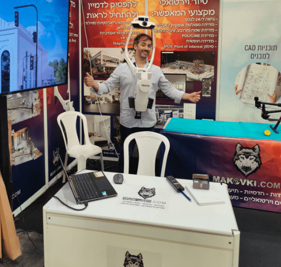
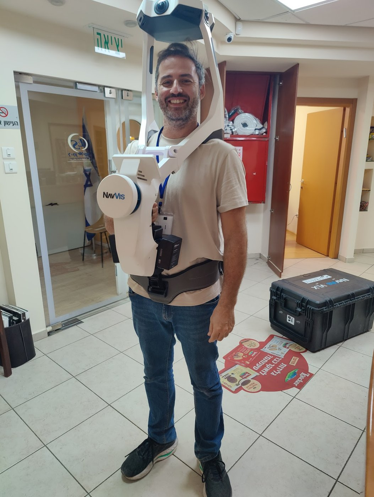

איך בעצם הופכים חלל פיזי לעותק דיגיטלי מדויק? נעבור צעד אחר צעד על תהליך סריקת הלייזר התלת-מימדית - מהרגע שנכנסים לנכס ועד הקובץ הנקי שמגיע למשרד - ונראה למה זה מהיר, מדויק וכמעט לא מורגש.

הכלי: סורק לייזר תלת-מימדי נייד
בלב התהליך עומד סורק לייזר תלת-מימדי נייד מהמתקדמים בעולם. הוא יורה 1,200,000 קרני לייזר בשנייה, נלבש או נישא בזמן ההליכה, וכולל גם מצלמות HD לתיעוד צבע וסיור 360°. בניגוד לסורק על חצובה שמצריך עמדות סטטיות, הסורק הנייד לוכד את החלל תוך כדי תנועה - וזה מה שמאפשר לו לכסות שטח גדול במהירות.
שלב 1 - סריקה בהליכה רציפה
הסריקה מתחילה בהליכה שקטה ברחבי החלל. אין צורך בחצובות, בסימון ידני או בפינוי המקום. הסורק לוכד ברציפות את הסביבה מכל זווית שדרכה עוברים, כך ש-120 מ"ר נסרקים ב-6 דקות. בזכות זה אפשר לסרוק משרדים, חנויות ובתים פעילים כמעט בלי לשבש את השגרה.
שלב 2 - איסוף ענן הנקודות
כל קרן לייזר שנשלחת פוגעת במשטח וחוזרת. מהזמן והזווית של ההחזר מחושב המיקום המדויק של הנקודה במרחב. מיליוני החזרים בשנייה מצטברים לענן נקודות צפוף - עותק דיגיטלי מדויק של המבנה, בסטייה של 6 מ"מ על 500 מ"ר (לפי הוראות יצרן).

שלב 3 - רישום וניקוי
לאחר השטח מגיע שלב העיבוד. הסריקות השונות מחוברות זו לזו בתהליך רישום (Registration) לענן נקודות אחיד ומדויק. לאחר מכן מנקים את הענן מרעשים ומאובייקטים לא רלוונטיים (אנשים שחלפו, ציוד זמני), כדי לקבל תיעוד נקי של המבנה עצמו.
הסורק נייד ולביש - הסריקה מתבצעת בהליכה שקטה, בלי לשבש את הפעילות במקום.
שלב 4 - הפקת התוצרים
מענן הנקודות המעובד מפיקים את התוצר שביקשתם:
- תוכניות AutoCAD מסודרות בשכבות (DWG/DXF)
- מודל תלת-מימד חכם ב-Revit (Scan-to-BIM)
- מודל SketchUp נפחי
- סיור וירטואלי 360° הניתן למדידה
מכיוון שהסריקה מתבצעת בהליכה שקטה ובלי חצובות, אפשר לסרוק משרדים וחנויות פעילים בלי לעצור את הפעילות - הפרעה מינימלית ללקוח.
למה זה מהיר, מדויק ולא פולשני
השילוב של ניידות, מהירות ודיוק הוא מה שהופך את הטכנולוגיה למשנה-משחק. במקום ימי מדידה, סורקים חלל שלם בדקות; במקום נקודות בודדות, לוכדים את הכל; ובמקום לשבש את המקום, פשוט מהלכים בו. עוד על הכלי עצמו במאמר מבט על הטכנולוגיה.

מתמחה בשירותי מדידה אדריכלית וסריקה תלת-מימדית בטכנולוגיית לייזר, עם 9 שנות ניסיון בשירות אדריכלים, מעצבי פנים ויזמים בפריסה ארצית.